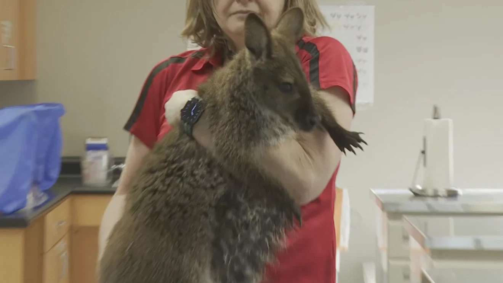
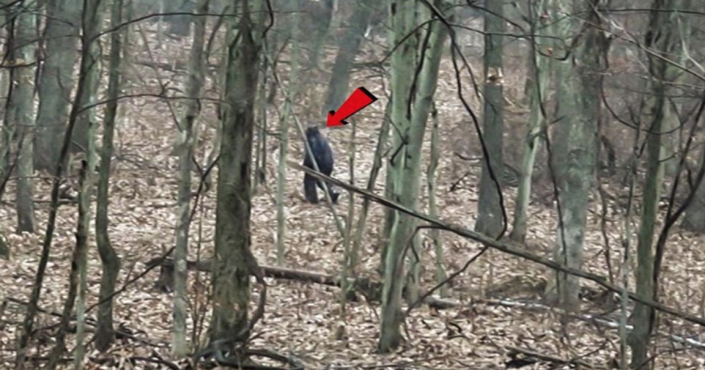

1 • Weird News
A wallaby was spotted casually touring an Ohio college campus, delighting students before being safely captured. Read full story
Further analysis: These exotic escapes highlight how easily non-native animals can slip into our everyday environments, often due to escaped or released pets, raising questions about wildlife management and the growing overlap between human spaces and the wild.
Further Research

2 • Cryptid Corner
Six reported Bigfoot sightings in northeast Ohio within four days have sparked “flap” speculation. Read full report
Further analysis: Concentrated sightings like this are classic examples of a “flap” in cryptozoology — periods of heightened activity that keep the Sasquatch mystery alive and continue to challenge our understanding of what might still roam the forests.
Further Research

3 • UFOology
President Trump has directed agencies to release government files on UFOs/UAPs. Read full coverage
Further analysis: The push for transparency continues a decades-long saga of declassifications and speculation, potentially opening the door to new public scrutiny of long-classified UAP encounters.
Further Research

4 • Ancient Wonders
Archaeologists in Egypt uncovered 3,000-year-old papyrus scrolls still sealed with original clay. Read full report
Further analysis: Many remain unopened, preserving secrets that may rewrite our understanding of the Third Intermediate Period and offer new glimpses into daily temple life and administrative practices of ancient Egypt.
Further Research

5 • Ghosts n Ghouls
More “witch bottles” — sealed containers of nails, urine, and charms — have been unearthed in colonial homes. Read full story
Further analysis: These folk-magic talismans reveal a hidden world of private superstition that persisted long after the official end of witch trials, showing how ordinary people blended Christian faith with older protective rituals.
Further Research

6 • In-Depth Research: The Voynich Manuscript – The World’s Most Mysterious Book
The Voynich Manuscript is a 240-page illuminated codex carbon-dated to the early 15th century, written in an entirely unknown script that has resisted every attempt at decipherment for over 600 years. Housed today in Yale University’s Beinecke Rare Book & Manuscript Library (MS 408), it features bizarre illustrations of unidentified plants, astronomical diagrams, biological scenes, and strange figures that defy conventional classification. Beinecke Library Official Page
Discovered in 1912 by rare-book dealer Wilfrid Voynich, the manuscript passed through the hands of Emperor Rudolf II of the Holy Roman Empire and Jesuit scholars before vanishing for centuries. Its vellum pages were subjected to radiocarbon dating in 2009, confirming the parchment was created between 1404 and 1438. Yet the ink and illustrations suggest the text was added shortly afterward, ruling out a modern forgery. 1
Decipherment attempts have ranged from the plausible to the fantastical. Cryptographers, linguists, and even World War II codebreakers have tried — and failed — to crack it. In 2017 a team from the University of Alberta used artificial intelligence to detect statistical patterns similar to natural languages, yet the text still yields no readable translation. More recent 2025 studies using advanced machine-learning models have proposed it may be an extremely complex cipher or even a constructed language, but consensus remains elusive. 2025 AI Study Summary
Leading theories include: (1) it is a herbal or alchemical text in a lost European language; (2) it is an elaborate hoax designed to impress Renaissance patrons; (3) it is a ciphered diplomatic or religious document; or (4) it represents an unknown script from a now-extinct culture. Each theory has compelling evidence and equally damning counterarguments. The manuscript’s “herbal” section depicts plants that do not exist in nature, while its astronomical diagrams show star patterns that do not match any known constellation. 2
Recent scholarship (2025–2026) has shifted focus toward the possibility of a “lost language” or a highly sophisticated steganographic system. Whatever the truth, the manuscript continues to inspire artists, novelists, and researchers, proving that some mysteries are more valuable unsolved than solved. It is the perfect embodiment of the Dailyesque Wunderkammer spirit: an object that invites endless wonder precisely because it refuses to give up its final secret. 3
Footnotes & References
- 1 Beinecke Rare Book & Manuscript Library, Yale University – Official Voynich Catalog.
- 2 Nature (2025) – “Machine Learning Analysis of the Voynich Manuscript”.
- 3 Raymond Clemens (ed.), The Voynich Manuscript, Yale University Press, 2016 (updated edition 2025).